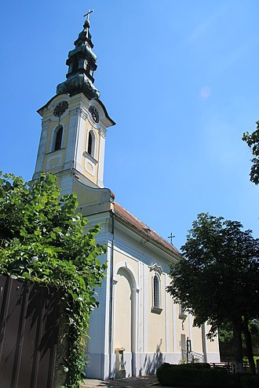

-Bela Crkva je gradsko naselje i sedište istoimene opštine u Južnobanatskom okrugu.
-Osnovana je u 18. veku, oko 1720. godine.
-Grad je poznat po svojim prelepim jezerima i prirodnim lepotama.
-Jedna od poznatih znamenitosti je crkva Svetih Petra i Pavla, izgrađena u baroknom stilu.

-Bela Crkva se često naziva i 'Grad na vodi' zbog svog položaja između jezera.
-Grad ima raznoliku etničku strukturu, sa značajnim brojem Mađara, Srba i drugih nacionalnosti.
Pročitajte više o Beloj Crkvi na Vikipediji